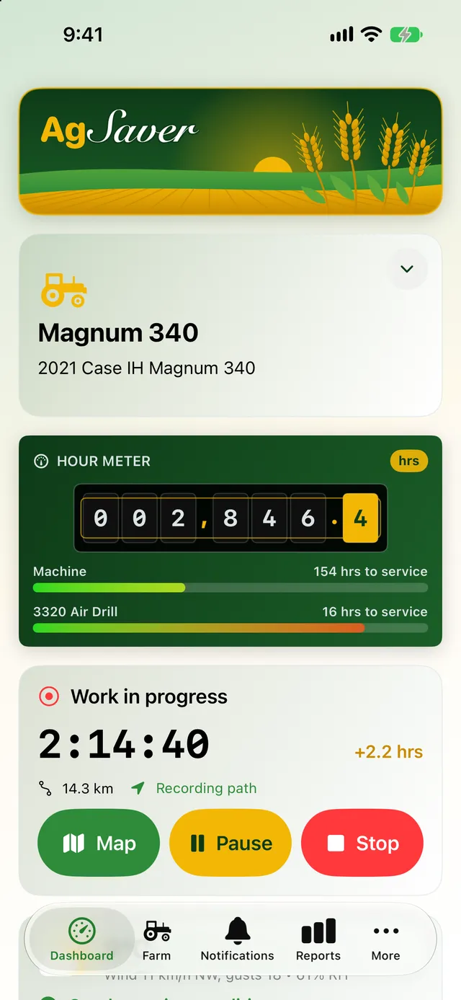
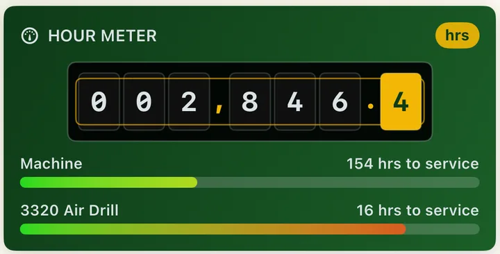
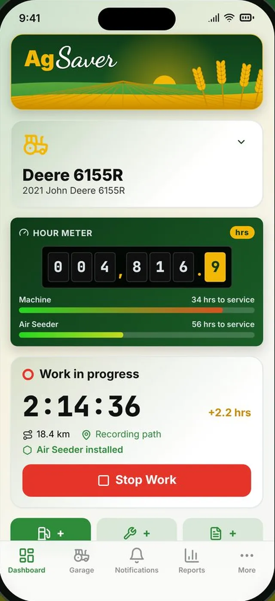
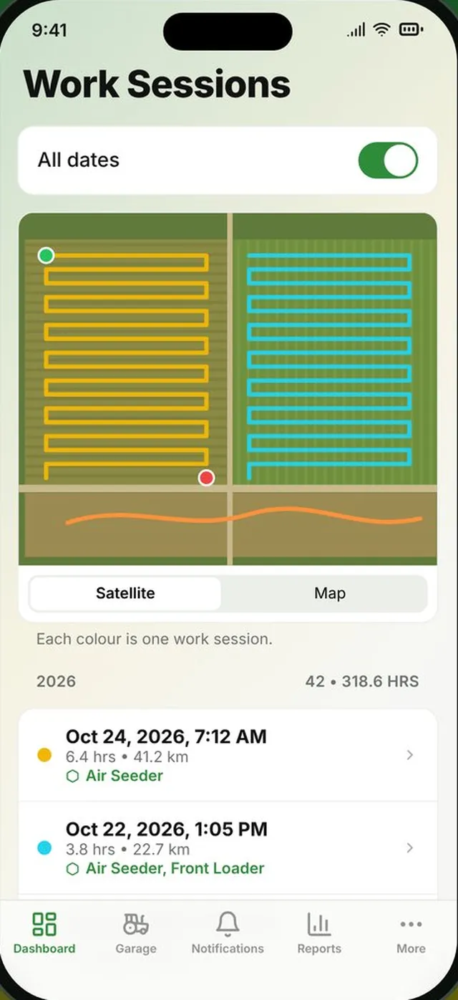
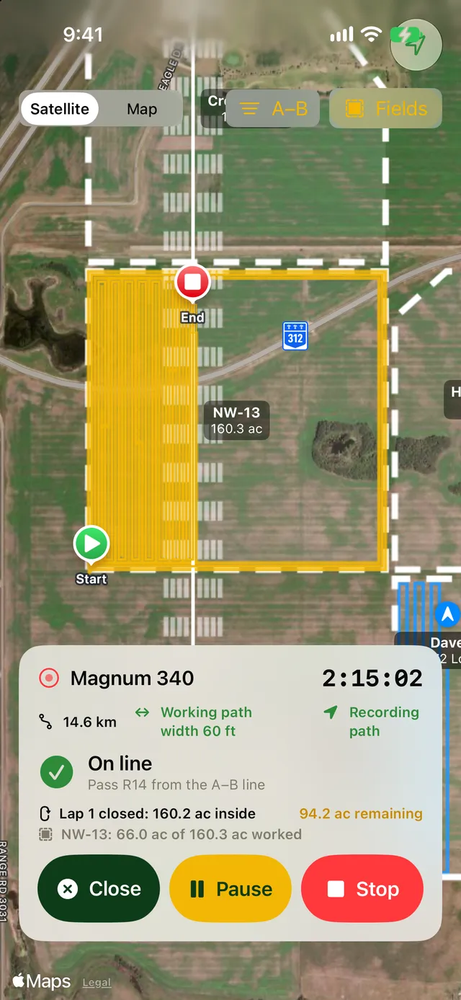
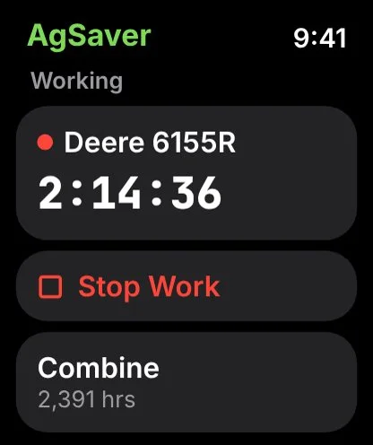

Hour meter & work sessions
Every machine gets a live hour meter. Start a work session with one tap, and AgSaver times the job, records where you drove and adds the hours to the machine and the implement on it.

A live hour meter for every machine
The dashboard shows the hour meter for the machine you're running, read to the tenth of an hour, just like the one in the cab. Under it, a bar for the machine and one for the implement on it count down the hours to the next service.
- Bars shift from green through yellow to red as service comes due
- A red Service Required tag shows on the dashboard and the Farm screen when anything is overdue
- Fix a reading any time to match the machine's own meter
- Switch machines from the dashboard in one tap

Start work with one tap
Pick the machine, check which implement is on it and tap Start Work. AgSaver runs the clock and records your GPS path and distance. Tap Stop and the hours go on the machine's hour meter and the implement's own hours.
- Pause for lunch or a fill-up, and paused time isn't counted
- Throw away a session started by mistake without touching the hour meter
- See the time, distance and hours added while you work
- Every finished session keeps its path, hours, fields and acres


Idle time doesn't count as work
Turn on auto pause in Settings and choose how many minutes the machine can stand still. When it stops moving for that long, AgSaver pauses the work clock from the moment it last moved, so the idle minutes never reach the hour meter. Drive off and it starts again by itself.
- Choose the idle time, or turn auto pause off
- GPS keeps watching so work resumes on its own

Run the clock from your wrist
The AgSaver Watch app shows each machine and its hours. Start or stop a work session without taking your phone out, and add a fuel fill-up from the Watch while you're at the tank.
- Start and stop work on any machine
- Live work timer on the Watch face
- Add fuel from your wrist

Built around how a working day really goes
The small things that keep the hours honest.
Sessions matched to fields
When a session ends, AgSaver works out which of your fields it was in and how many acres you covered in each.
Weather saved with the work
Each finished session looks up the weather from Apple Weather for where and when the work was done, halfway through the job.
Implement hours
Implements keep their own hours, so a seeder moved between tractors still knows how long it has run.
Full session history
Filter sessions by machine, implement or date, and open any one to see its path on the map.
Litres or US gallons
Choose your fuel units and currency once in Settings, and every screen and report follows.
Service alerts
Turn on maintenance alerts and AgSaver lets you know when a machine passes its service interval.
More of what AgSaver does
Put every hour and every acre to work.
AgSaver runs on iPhone, iPad and Apple Watch. Your records stay on your devices and your own iCloud.
 Scan to download
Scan to download